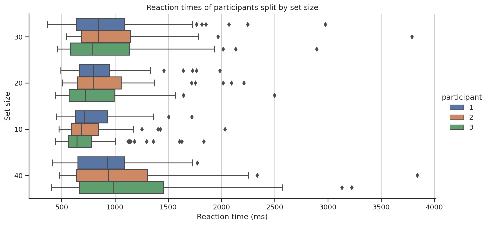

import warningswarnings.simplefilter(action='ignore', category=FutureWarning)import numpy as npimport seaborn as snsimport statsmodels.api as smimport statsmodels.formula.api as smfimport pandas as pdimport matplotlib.pyplot as pltfrom pathlib import Path# classes for special typesfrom pandas.api.types import CategoricalDtype# Apply the default themesns.set_theme(style="ticks")# Set default precision for displaying numberspd.set_option("display.precision", 2)#|
1 Introduction
The visual search experiment is a psychology experiment that is used to study how the human visual system processes and searches for specific stimuli in a visual scene. The experiment typically involves presenting participants with a visual display, such as a picture or a computer screen, that contains a number of objects or stimuli. The participants are then asked to search for a specific target stimulus, such as a pink line, among the other stimuli in the display.
During the experiment, the researcher may manipulate various factors, such as the number of stimuli in the display, the similarity of the stimuli to the target, or the location of the target within the display. These manipulations allow the researcher to study how different factors affect the speed and accuracy of the participant’s search for the target stimulus.
One of the most widely used manipulation in visual search experiment is the set size, which is the number of stimuli in the display. The experimenter increases the set size and observe how it affects the reaction time of the participants.
Another manipulation that is often used in visual search experiments is the similarity of the stimuli to the target. This can include manipulating the color, shape, or size of the stimuli to make them more or less similar to the target. The experimenter can observe how these manipulations affect the speed and accuracy of the participant’s search for the target.
The visual search experiment is a powerful tool for studying the human visual system because it allows researchers to study how the brain processes and searches for specific stimuli in a visual scene.
Overall, visual search experiment is a widely used method in cognitive psychology to study how visual perception and attention work. It provides researchers with a tool to investigate fundamental question about how we perceive and process visual information in the world around us.
We will study how the reaction time changes as set size increases under different circumstances. Specifically, the effects of set size, homogeneity (feature vs. conjunction) and target presence on reaction time will be examined. A total of N=3 participants will be recruited for the study. We then fit a linear regression model predicting the reaction time based on the set size, search type and target presence. We will be interested in the coefficient in the linear model corresponding to set size. We can think of the slope as giving us a measure of how much does the reaction time increase, if we increase the set size by 1. This will be our measure of efficiency.
The experiment will consist of 300 trials, in which participants will be presented with an image containing a set of lines with different orientations (either / or \). The participants will be instructed to search for a pink line with an orientation of / and indicate whether it is present or absent. The trials will vary in set size (10, 20, 30, or 40) and search type (feature or conjunction). In feature search, the image will contain only lines of a single color (lines with orientation \ act as distractors), while in conjunction search, the image will contain a mixture of blue and pink lines (blue lines and pink lines with orientation \ act as distractors). Participants will be provided with feedback on the accuracy of their responses and encouraged to respond as quickly as possible. The estimated duration of the experiment is approximately 15-20 minutes.
The participants consisted of students in age range 20-25 years old. Both genders were represented. The participants were seated in front of a 14-inch monitor with 1920x1080 resolution and instructed to make themselves comfortable. No training trials were conducted prior to the experiment. No participant needed to take a break during the experiment.
Firstly, in Table 1 we report the accuracy (percentage of errors for each participant). Additionally Figure 1 we report the accuracy of the participants on different search types as well as set sizes. We remove the error trials for the subsequent analysis.
Figure 1: Accuracy of of each participant (column) split by homogeneity (row).
In Figure 2 we report the distribution of reaction times split by set size for each participant.
Report reaction time split by set size
hlp = df_correct[["participant", "set_size", "rt"]].copy()# Treat set size as categorical datahlp["set_size"] = hlp["set_size"].astype(str)g = sns.catplot( data=hlp, y="set_size", x="rt", hue='participant', kind='box', aspect=2, )g.ax.xaxis.grid(True)g.set_xlabels("Reaction time (ms)")g.set_ylabels("Set size")g.set(title="Reaction times of participants split by set size");

Figure 2: Reaction times divided by set size.
Next, we focus our attention on predicting the reaction times based on set size. We are interested in how the performance changes if we change the homogeneity (feature/conjunction) and target presence. In Table 2 we report the set size effect (search slope) for each case and participant with the 95% confidence interval.
It is noteworthy that the slope for feature search is consistently lower compared to conjunction search (when the target is present). This trend is also observed for target absent trials in both feature and conjunction searches. Lastly, the absence of the target leads to an increase in the search slope, regardless of the search type.
These observations are also depicted in the Figure 3.
Fit regression models
# Fit a linear regression model predicting the reaction time based on set size.# Consider cases with different homogeneity and whether the target was present# or not and report the slope of the coefficient for reaction time and 95%# confidence interval. This time considerparticipants = df_correct.participant.unique()df_result = pd.DataFrame( columns=["participant", "conjunction", "present", "set_size_slope", "ci_l", "ci_u", "r2", ] )for participant in participants:for is_conjunction in [True, False]:for target_present in [True, False]: hlp = df_correct[ (df_correct.participant == participant) & (df_correct.conjuction == is_conjunction) & (df_correct.present == target_present) ] model = smf.ols('rt ~ set_size', data=hlp) result = model.fit() ci = result.conf_int(alpha=0.05).loc["set_size"] tmp = [ participant,int(is_conjunction),int(target_present), result.params["set_size"], ci[0], ci[1], result.rsquared ] df_result = pd.concat( [df_result, pd.DataFrame([tmp], columns=df_result.columns)], ignore_index=True )df_result = df_result.assign( yerr=lambda _: np.abs(_['set_size_slope'] - _['ci_l']),)
Figure 3: Search slope with 95% confidence intervals. The left figure contains the values for feature search, the right for conjunction search. Two values for each participant are shown. One for target present (circle) and one for target absent (square).
4 Conclusion
We now address the observed results.
First, we address the variations in slopes for different search types in the presence of the target. The visual salience of the target in feature search leads to it immediately capturing our attention as it drastically differs from its surroundings. Conversely, the presence of distractors results in several similar items attracting our attention, which necessitates the examination of more items, thereby leading to an increase in reaction time, which agrees with our observations.
Next we address the difference in slope for the target absent trials. In target present trials, it is generally necessary to examine roughly half of the set size items until the target is found. However, in the absence of the target, the participant must spend more time examining the objects in search of a target, which results in an increase in reaction time, which is consistent with our observations.